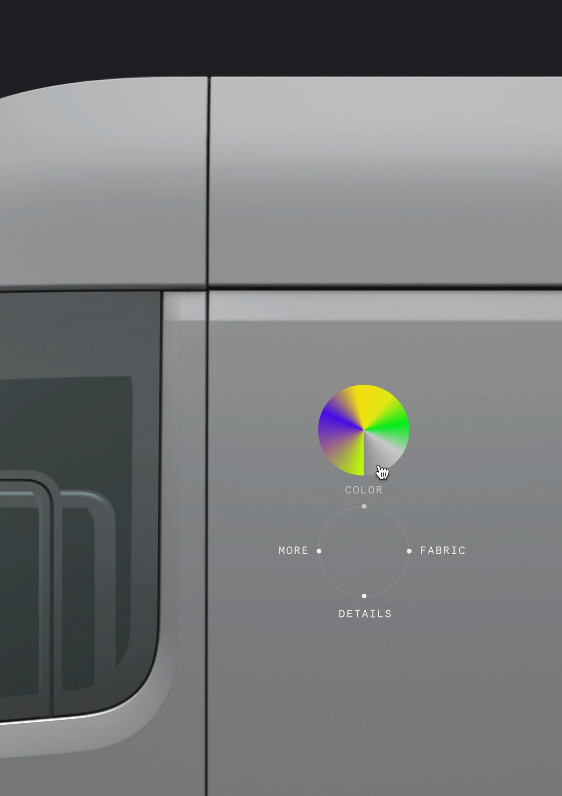
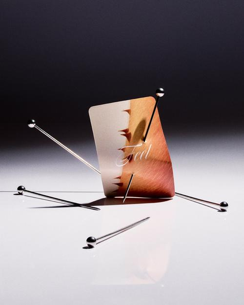
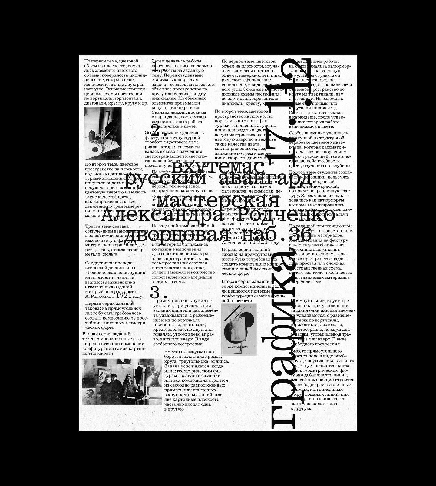
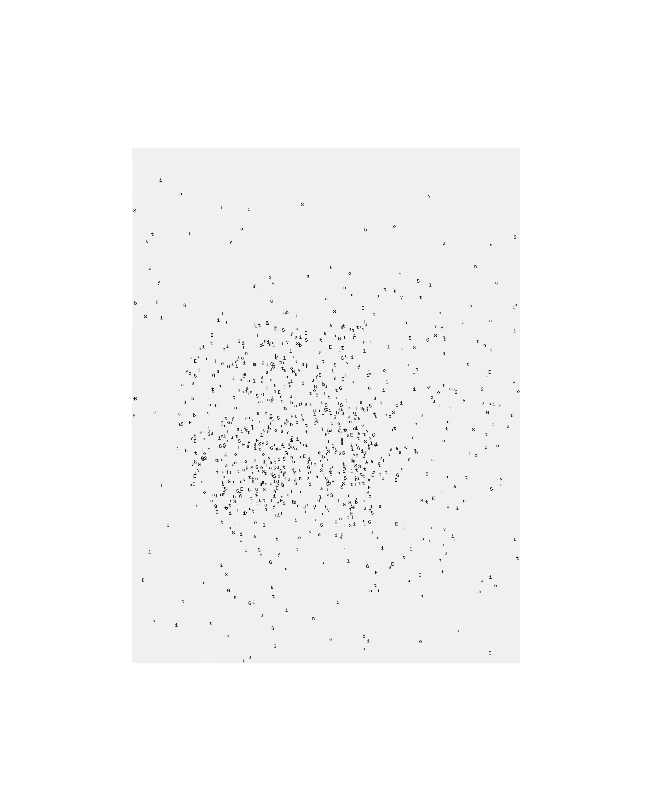

Студия Артёма Тарасова и Артёма Тарадаша считает себя антидисциплинарной: дизайн начинается раньше Figma. Разговор про манифест, ритуалы и крафт в эпоху AI.
Я заканчиваю диплом и делаю медиа о культуре дизайна. Интересно не только смотреть на красивые работы, но и спрашивать, что за ними стоит, зафиксировать, как вы сами себя чувствуете и что вкладываете в свою практику. Первый вопрос: как вы понимаете «культуру дизайна»? Что в это понятие входит для вас?
А что ты за этим понимаешь сама?
Смешно, у меня все спрашивают: «Что ты понимаешь?» Я бы сказала, это столпы, на которых держится практика конкретного специалиста или студии. То, чему вы остаётесь верны как принципам. Я когда-то начала об этом думать, услышав в подкасте про принципы Дитера Рамса: вот человек кратко и ёмко зафиксировал, и Apple им остаётся очень верна. У них что-то получается, что-то не получается, но именно благодаря людям и принципам, которым они следуют. Мне кажется, в командах и в креативных парах есть какие-то вещи, которые стоят во главе угла. Интересно, есть ли у вас такие или нет.
Дизайн-культура, а не культура дизайна. Потому что «культура дизайна» для меня, это как будто культурность, другое слово.
Да, можем говорить о дизайн-культуре. Я намеренно переворачиваю формулировку, чтобы она резала ухо и создавала новые смыслы.
На самом деле, у нас есть куча мемов, которые мы постоянно придумываем и которые становятся внутренними брендами. Они как раз ложатся в твой запрос, это ответ на вопрос про культуру дизайна. (Тарадашу) Сейчас вспомню, ты что-то нашёл?
В том-то и дело, что, по мне, это не консолидированная вещь. Когда Дитер Рамс делал свои одиннадцать принципов хорошего дизайна – это была консолидированная версия дизайна. А сейчас дизайн консолидированным быть не может. Мы живём в мире постдизайна, когда смысл важнее того, как это выглядит. И культура, и принципы, на которых живёшь, об этом. Мы их можем по-разному рассказывать, но всегда говорим об одном: во главе всего некая точка-метафора, которая, с одной стороны, вибрирует у всей команды, а с другой будет противостоять всему, что вокруг. Например, ты сама сейчас сделала это с дизайн-культурой, переставила, чтобы оно вибрировало вокруг. И мы делаем примерно то же самое.
Просто по-разному всё называем. В какой-то момент мы начали складывать это в виде копирайтинга. И всё время так или иначе говорим об одном и том же, используем одни и те же методы. Эти мемы можно считать ценностями или столпами, на которых наша практика существует. Но скорее это органическая вещь, которая меняется по ходу нашего движения, как мы развиваемся как личности, как развиваем бизнес.
Первое – антидисциплинарный подход. Не мульти-, а анти-, потому что нам нравится контртон, отрицание, которое в этом заложено. Чтобы придумать что-то клёвое сегодня, нужно отрицать дисциплину, из которой ты вышел. Чтобы придумать что-то в рамках диджитал-продукта, нужно отрицать все остальные диджитал-продукты, стандартные решения, то, как принято. Чтобы придумать то же для бренда, нужно идти в другую крайность. Поэтому из дисциплины себя надо иногда вытаскивать насильно, делая несколько шагов назад. Мы это пропагандируем во всяких публичных выступлениях: дизайн на самом деле находится на два шага раньше, чем рисование или проектирование. Он в моменте идеи.
И наши слова из месяца в месяц доказывает распространение искусственного интеллекта: насколько быстро это происходит и насколько невозможно заменить креативность, творчество и аутентичность человека, но насколько можно быстро заменить крафт. Как бы грустно это ни было, это так. И дальше будет только быстрее. Поэтому главное не (или не только) в том, как это выглядит и работает, а в смыслах, заложенных в это. В глубине и аутентичности людей, которые это делали.
Это другой пункт – human-centric. Мы так и назвались, потому что не лукавим: мы реально всё строим вокруг людей. Нас сейчас трое в этом Zoom. Этот разговор получается так, потому что нас трое. Тебя убери или Артёма убери, он получится другим. Этот Zoom можно считать сложившимся произведением. Бизнес можно из этого сделать, это уже дальше, не важно. Творчество, бизнес, дизайн, для нас это всё одно. Но определяется людьми в комнате. Есть одно условие: получается классно, пока эти люди готовы быть честными, аутентичными и ответственными. Дальше это уже вопрос построения отношений – внутри команды, с клиентами, с коллабораторами. Через доверие, ответственность и аутентичность.
> Атрибуция А¹/А² ниже не подтверждена – ждёт второго прохода с Юлей.
Дизайн на самом деле находится на два шага раньше, чем рисование или проектирование. Он в моменте идеи.
– Артём Тарасов и Артём Тарадаш
Чтобы придумать что-то клёвое сегодня, нужно отрицать дисциплину, из которой ты вышел. Чтобы придумать что-то в рамках диджитал-продукта, нужно отрицать все остальные диджитал-продукты, стандартные решения, то, как принято.
– Артём Тарасов и Артём Тарадаш
Это другой пункт – human-centric. Мы так и назвались, потому что не лукавим: мы реально всё строим вокруг людей. Нас сейчас трое в этом Zoom. Этот разговор получается так, потому что нас трое. Тебя убери или Артёма убери, он получится другим. Этот Zoom можно считать сложившимся произведением. Бизнес можно из этого сделать, это уже дальше, не важно. Творчество, бизнес, дизайн – для нас это всё одно. Но определяется людьми в комнате. Есть одно условие: получается классно, пока эти люди готовы быть честными, аутентичными и ответственными. Дальше это уже вопрос построения отношений: внутри команды, с клиентами, с коллабораторами. Через доверие, ответственность и аутентичность.


Эти принципы, назовём это манифестом, кратко и ёмко перечисленное, они появились органично, скорее всего? Вы зафиксировали что-то, что уже было? Интересно покопаться в органике появления. Был опыт работы в других командах, и вы сели и подумали: «Не хотим так»? Или вынашивали идею, и она родилась? Интересна точка, когда вы соединились и начали свою студийную деятельность.
Забавно, что ты уже ответила сама. Органика появления – в органике [смеётся]. Поэтому мы и не говорим, что это супердолгосрочные принципы. Мы растём вместе, каждый что-то новое вносит, и крышу над этим фундаментом не ставим. Меня всегда палят и бесят принципы Дитера Рамса: он такой – «я настолько большой, что возьму и опишу весь дизайн». А по мне это глупость поганишная.
Это же бред – описать весь дизайн. Как ты опишешь всё человечество? Это невозможно. А дизайн без людей невозможен. Невозможно описать человечество даже в одной точке. Как ты опишешь принципы дизайна в долгосрочном будущем? Если наложишь его принципы на современный дизайн, они не подходят никому и никак. И что, с ними бегать? Когда из дизайна делается жёсткая школьная структура – Баухаус, Дитер Рамс, это можно преподавать в школе, но потом ты с этим ничего не сделаешь, потому что выпрыгиваешь оттуда, а мир другой. Не хочется жить в панельках, кровь от крови Баухауса. И так же не хочется жить в мире Дитера Рамса. Ты там даже штаны не снимешь, дома голым не походишь. Должен ходить в штанах дома, где всё сделано «как у Дитера Рамса». Ходи в штанах? Да иди на хрен. Мне хочется ходить голышом дома, делать что-то подобное, нассать посередине зала. А Дитер Рамс себе такого не позволяет. И в итоге это превращается в отсутствие движения. Сейчас дизайн начинает отрицать минимализм, органически его изживать. Посмотри на новый iPhone, он сам отпрыгивает от того, что такое минимализм. Это ни плохо ни хорошо, кому-то нравится, кому-то нет. Но ты всегда можешь сам это поменять. И как только мы перестанем рожать эти мемы, через недельку умрём. Значит, наша жизнь остановилась. Поэтому принципы Together with you строятся исключительно на органике. Но там есть базовая вещь про коллаборации. И базовая, что метафора и этот первичный экстаз правят миром, остальное второстепенно.
Сейчас поймал хорошую мысль. На контрасте: роль случая очень важна. Поэтому «про органику» прикольно. И поэтому Дитер Рамс и Корбюзье – люди прошлого: там антислучай, антиприрода. Попытка спроектировать что-то вопреки, идеальное нечто. Но идеала не бывает. И в итоге эти люди оказываются злыми стариками. [смеётся]
А люди, которые умирают в счастливой старости, как правило, чем-то другим жизнь заняли. Мы стараемся обращать внимание на случайность. Это во многом история про количество людей в комнате, и кто они, определяет результат работы. Иногда тебе даже делать ничего не надо: идея рождается за счёт формулы «ты плюс я плюс кто-то ещё». И может повлиять случай – внешнее событие, среда, время дня, погода, твоё личное состояние. Невозможно отрицать значимость этого. Некое событие может иметь авторство внутри результата работы. Если уж событие может иметь авторство, что говорить о людях?
Кайфовый дизайн – это результат ошибок, а не принятых правильных решений. Ты что-то нашёл, шутейку, артефакт, и оно легло в основу. Либо нашёл что-то, что может стать длинным событием внутри размышлений, сигнатурной вещью, на которую потом можно опираться. Но порой это вообще ошибки. Ты понятия не имеешь, как это происходит. Происходит за счёт того, что вы общаетесь, шутите, играете, думаете друг о друге. Это точно не штука про «давай теперь дизайн по семи принципам побьём». Чёрт его знает.
Кайфовый дизайн – это результат ошибок, а не принятых правильных решений.
– Артём Тарасов и Артём Тарадаш
Я не отрицаю, что кому-то это надо. Когда у тебя сильно большая команда и не получается лично улавливать связь, да, такие штуки нужны, и их стоит фиксировать. Но если говорим о чём-то очень звонком и тонком, возрастает роль триггеров и роль момента. Их можно отследить, значит, можно зафиксировать и какую-то аутентичность поймать. Если же начинаем делать дизайн под очень большую штуку, чтобы всем угодить, получается общая размазанная вещь. А вокруг ваших проектов, например, можно дискутировать. Вы клёво делаете брендинг – именно бренда, потому что он отличительный, его прикольно запоминать. Это, наверное, главная ценность. Если начинаешь это размазывать на большое количество людей, начинаются компромиссы.
Не так много людей готовы брать ответственность за то, чтобы оказывать импакт на бренд. И это нормально, люди не должны брать ответственность за чужой бизнес. Если ты в найме в корпорации, это не твоя компания, ты ей ничего не должен – у вас коммерческие товарно-денежные отношения. Но обязательно есть человек, для которого это больше, чем работа. Таких людей может быть много. И вот они…
> Атрибуция А¹/А² ниже не подтверждена.

Хочется спросить про рутину. Есть любимый ритуал у вас обоих? Необязательно совместный, могут быть и разные.
Сложно относиться к этому как к «работе». Это просто время, которое тратишь на то, что тебе нравится. Хочешь, чтобы было классно, тратишь час, два, десять. Хочу – трачу, хочу – нет. Бывает дедлайн показа: «к этому времени надо что-то показать». Это единственное «надо».
Ритуал «быть эффективным» – немного дурацкая тема. Кажется, всё должно быть в удовольствие в одной степени: кофеёк сделать, ужин приготовить, прогуляться, спортом заняться, дизайн поделать. Не «отдыхаю от одного, делая другое», и не «пойду похайпать, чтобы потом сделать дизайн».
Важно, чтобы мы вдвоём были, и ещё клиенты. Остальное второстепенно. У меня нет проблемы начать работать из туалета, из аэропорта, откуда угодно. [смеются] У тебя есть такое? Каждый день перед работой что-то делаешь?
Ритуалов в смысле «без этого не могу» нет. Мы из каких только мест друг с другом не работали. Но есть перманентная вещь: периодически просто сверяемся, держим синхронизацию вокруг друг друга. Это и есть «держать отношения на плаву». Когда вы вдвоём, это как семейные, как романтические отношения. Нам важно друг друга понимать на многих уровнях.
> Атрибуция А¹/А² ниже не подтверждена.
Последний большой вопрос, про AI. Я встречаю разные мнения. Из своего опыта вижу: если ты человек, умеющий формировать vision, то с ИИ работать клёво и быстро. Если же ты мастер, рисуешь шрифт, верстаешь книгу, то AI пока вообще не близко. Я скорее в первом подходе. А что думаете вы и насколько активно используете эти инструменты?
Юзаем очень активно. Тут важна специфика: мы digital-first, и у нас мало ручного, упаковок, например, мы почти не делаем. Не сказать, что мне этого лично не хватает: иногда хочется что-то ручное поделать, но это не влияет на результат. Я дизайн вижу чуть в другом, и думаю, мы тут с Артёмом сходимся. Когда ты идёшь домой определённым путём или выбираешь, что на ужин приготовить, это такой же момент дизайна, как и любой другой. Это просто творческий импульс, момент, когда твоя творческая сторона включается и начинает решать задачу нетривиальным путём. И ты можешь решить её очень дёшево, заказав еду в Wolt, а можешь приготовить сам. AI – это просто ультрабыстрые инструменты решения твоих творческих задач. У тебя будут разные кейсы, и в мире есть место всему: и тому, где надо сделать что-то долго, приложив всё ручное мастерство, и тому, где надо сделать быстро, по щелчку, описав промпт или просто подумав.
Я слышал мнения про AI как про что-то чудовищное: лишит работы, поменяет мир. Мне кажется, это тоже дизайн – придумать себе новый способ существовать в этом меняющемся мире. Если ты этого не можешь, буду цинично рассуждать, значит, наверное, ты и в дизайне плох? Если ты не можешь сориентироваться в наборе случайностей и меняющихся факторов.
Всему есть место и всему будет. Просто перемешается, как часто это происходит. Газеты переехали в интернет, журналы остались. Печатная пресса осталась, просто стала выполнять другую функцию. Никто не читает эти тексты, зато они ставят красивые картинки. AI не отрицает крафт, это просто другой вид крафта. Раньше книги набирали на станке, а сейчас не на станке. То же самое.
Ты выбираешь из поливариантности способов: хочу сделать в AI, потом отправить в Фотошоп, дорисовать и куда-то выложить. AI всё не заканчивается и не начинается, оно просто есть там. Никогда не бывает «только AI». Фигма, она такая: «Ну всё, я нахрен не схлопаюсь». AI – это просто функция Фигмы. Какое-то количество задач можешь закрывать там, какое-то здесь. Но нет такого, что «эта штука сама всё сделает». Фотошоп тоже много чего умеет делать сам, Фигма много чего может, это не убивает людей вокруг.
AI не отрицает крафт, это просто другой вид крафта.
– Артём Тарасов и Артём Тарадаш
Это, типа, эвтаназия художника: он постоянно в эвтаназию уходит, убивает себя в конце каждого результата. А в AI этого нет. Ты просто в цикле: смотришь, смотришь ещё что-то.
– Артём Тарасов и Артём Тарадаш
Хайповая вещь, что AI убьёт нахрен все профессии. Оно убьёт профессии, которые занимались описательным пространством. Под «описыванием» я не имею в виду буквально «дорисовывание, доделывание», я имею в виду места, где нет первичного импульса. Там AI много чего порешает. Но когда речь касается начального импульса, даже в архитектуре, в автомобилестроении, тебе надо придумать какой-то экземпляр. Ты в AI просто бьёшься: «Сделай это, сделай вот так, покажи вот так». Останавливаешься: «Вот это нравится» и идёшь туда углубляться. Это тот же крафт, просто быстрее. Раньше ты бы долбился с 3D Max миллионы лет, а так накидываешь: «Дай, дай, дай, вот сюда хочу. Поехали».
И все пытаются решить проблему энтропии внутри AI, что он не даёт всегда тот результат, который нужен. Чтобы он давал нужный результат, надо упарываться: как бы один из второго выходит, потому что он всегда начинает с хаоса. Как этот хаос эволюционировать, вот основные проблематичности. Ты по-любому всегда в энтропии. И когда сам делаешь руками, тоже в энтропии. Никогда не получается так, как у тебя в голове. Никогда. Просто там тебе дают результат быстрее: посмотрел, иду дальше.
Интересная штука: когда ты делаешь что-то с AI, ты перестаёшь относиться к этому слишком персонально. Тебе легче отказываться от загнивающих ответвлений от основной идеи. «Ничего страшного, я на это не так много потратил». Возвращаешься, идёшь дальше. И это, наоборот, даёт огромный прирост к тому, что получится в конце. Возможно, в конце вы устроите фотосессию и будете снимать людей. Но чтобы к ней прийти, надо итерировать энное количество фотосессий. Почему так много хреновых фотографов? Потому что у них не было AI. Они видят что-то в голове, а в голове это волшебно. Сфоткали, а потом такие: «Говно». И с этим уже ничего не сделаешь. Это, типа, эвтаназия художника: он постоянно в эвтаназию уходит, убивает себя в конце каждого результата. А в AI этого нет. Ты просто в цикле: смотришь, смотришь ещё что-то. Насмотренность у дизайнеров из-за AI вырастает очень классно, они начинают сравнивать очень много всего. Я в этом боли не вижу. Я вижу невероятную возможность развиваться ещё быстрее.
> Атрибуция А¹/А² ниже не подтверждена.
Интересная штука: когда ты делаешь что-то с AI, ты перестаёшь относиться к этому слишком персонально. Тебе легче отказываться от загнивающих ответвлений от основной идеи. «Ничего страшного, я на это не так много потратил». Возвращаешься, идёшь дальше. И это, наоборот, даёт огромный прирост к тому, что получится в конце. Возможно, в конце вы устроите фотосессию и будете снимать людей. Но чтобы к ней прийти, надо итерировать энное количество фотосессий. Почему так много хреновых фотографов? Потому что у них не было AI. Они видят что-то в голове, а в голове это волшебно. Сфоткали, а потом такие: «Говно». И с этим уже ничего не сделаешь. Это, типа, эвтаназия художника: он постоянно в эвтаназию уходит, убивает себя в конце каждого результата. А в AI этого нет. Ты просто в цикле: смотришь, смотришь ещё что-то. Насмотренность у дизайнеров из-за AI вырастает очень классно, они начинают сравнивать очень много всего. Я в этом боли не вижу. Я вижу невероятную возможность развиваться ещё быстрее.



Зацепилась за энтропию. Когда работаешь с чатом, ты пишешь запрос, и всё начинается с идеи. И тут линкуется с тем, о чём мы говорили в начале: если идея есть, то полпути пройдено, осталось найти исполнение. А в исполнении большая палитра решений, и у кого-то может не получиться нарисовать это красиво. Как у вас устроен путь от идеи до картинки? Как вы определяете качество? Вы два разных человека, у каждого своё видение.
Надо доверять себе. Иногда первым вещам, которые приходят. Понятно, что их часто надо допилить, додрочить, но это уже техническая фигня. Together with you мы сделали после многих лет в дизайне, на самом деле. Сложно представить студию людей, которые только заехали в профессию, и хотят…
Это вопрос интенции, братец.
Я скорее думаю про количество ошибок и шишек, которые ты набил. В результате формируется свой почерк. И вот это относится к качеству – какой-то определённый почерк есть категория «качественно/некачественно». Но эти категории всегда индивидуальны. Сейчас это меняется ещё и поколенчески: я вижу, что нравится зумерам, и это другое. Более шершавые вещи, в которых больше жизни. Раньше они в мою личную категорию «качественно/некачественно» не попадали, выпадали. А сейчас уже попадают.
Качество – субъективная вещь. Это не объективный параметр. Связано с тем, что человек проходил в своей жизни. Я не могу определить качество. Бывает: смотришь, вроде плохо, а вроде и хорошо. Либо всё хорошо, но что-то одно тебя парит так, что ты: «Да всё говно». Я в себе это пытаюсь изживать, критически относиться, говорить «вот это плохо, вот это хорошо». Потому что как только это появляется, появляется школьность. Типа «вилка слева».
Бывают истории, когда мы что-то делаем, потом ребята что-то делают – «это плохо». Но мы друг другу начинаем бить по рукам за это. Либо Артём говорит «плохо», я: «Артём, это просто развитие, это их видение, следующий шаг. Мы не знаем, в какой они стадии познания». Либо я: «Ох, как плохо!», а Артём: «Это следующий шаг для их развития» [смех]. Они так на это сейчас смотрят. Ну и всё.
Качество – это какой-то ещё момент про дроч. Когда ты успокоился, смотришь и такой: «Ну ладно, всё. Вроде готово». Этот момент «вроде готово», во-первых, никак не похож на то, что ты задумал. Во-вторых, всегда неидеальный, всегда можно что-то доделать. Это микс из того, что ты заебался и тебе страшно надоело, хочется переключиться, и какой-то реальной доделанности.
И ещё интересная штука: я недавно заметил, что мне нравятся все наши проекты, но в последних есть какой-то момент… Не «больше нравится», а «по-другому». Думаю, через год снова посмотрю и увижу что-то новое. Это важно, всё время отмечать, что какое-то развитие идёт. А если ты достиг идеала, которого не существует, кроме как в твоей голове, у тебя нет возможности дальше идти.
Только как Дитер Рамс, можешь писать списки того, из чего твой идеал состоит. [смеётся]
> Атрибуция А¹/А² ниже не подтверждена.
Мне в начале интервью пришла цитата из прошлого. В комиксах про Черепашек-Ниндзя была фраза «постоянство перемен». Близко к тому, что мы сейчас разгоняем: жизнь, движение, взаимодействие. Проекты тоже должны жить и меняться.
Это классная отсылка к Макиавелли. У него есть «всё истинно – ложно».
Постоянство переменное.
1. Атрибуция говорящих. Юля подтвердила атрибуцию для двух первых секций («Часть 1»: А¹ = Тарадаш; «Принципы и мемы»: А¹ = Тарасов, А² = Тарадаш). В остальных секциях лейблы А¹/А² оставлены под пометкой (атрибуция не подтверждена) и ждут второго прохода. Особенно это важно в местах, где мысль развивается через несколько реплик: чтобы слышалось, что говорит один и тот же человек.
2. Заголовок. Текущий рабочий вариант построен вокруг «антидисциплинарного подхода»: «Не мульти-, а анти-». Альтернативы, если хочется иначе: - «Антидисциплинарный подход». Together with you о принципах студии, ритуалах и крафте в эпоху AI. - «Чтобы придумать что-то клёвое, надо отрицать дисциплину». Together with you о манифесте студии и AI. - «Дизайн на два шага раньше, чем рисование». Together with you об антидисциплинарном подходе и постоянстве перемен. «Постоянство переменное» оставлено закрывающей секцией.
3. Стандфёрст. Подтверждён («ок»). Оставляю в текущем виде.
4. Длина. Исходная транскрипция была ~7000 слов; этот черновик – ~3500. Сократила за счёт филлеров, повторов одной мысли в разных формулировках, и собственных длинных meta-вопросов. Не сокращала ни одного смыслового тангенса (Дитер Рамс / штаны / эвтаназия художника / Wolt – всё на месте).
5. «Нассать посередине зала» в анти-Рамс рантe. Сильная фраза, очень характерная. Я её оставила. Спроси у парней, ок ли это в публикации, если они против, заменим на смягчённую формулу или пропустим. Это их слово, их решение.
6. Pull-quotes (выноски). Сейчас четыре, две из них подлиннее (по комментарию Юли): - «Дизайн на самом деле находится на два шага раньше, чем рисование или проектирование. Он в моменте идеи.» - «Чтобы придумать что-то клёвое сегодня, нужно отрицать дисциплину, из которой ты вышел. Чтобы придумать что-то в рамках диджитал-продукта, нужно отрицать все остальные диджитал-продукты, стандартные решения, то, как принято.» - «Кайфовый дизайн – это результат ошибок, а не принятых правильных решений.» - «AI не отрицает крафт, это просто другой вид крафта.» - «Это, типа, эвтаназия художника: он постоянно в эвтаназию уходит, убивает себя в конце каждого результата. А в AI этого нет. Ты просто в цикле: смотришь, смотришь ещё что-то.» Если пять – много, легко сократим до трёх-четырёх.
7. Подзаголовки. Сохранила те, что были в исходнике (Принципы и мемы, Генезис, Ритуалы, AI, Качество и эволюция, Постоянство переменное), потому что они хорошо разбивают длинный текст.
8. Места, которые я объединила (потому что в транскрипции они дублировались дословно или почти дословно): - Реплики про «единственное надо – дедлайн показа» шли трижды. Оставила один раз. - Реплики про «держим синхронизацию» шли тоже трижды. Оставила один раз. - Это безопасные сокращения, но если хочешь увидеть оригиналы – скажу, где смотреть.
9. Места, которые я убрала полностью: - Метарепликовый кусочек в начале («Так, понятно / А, ну класс / Я говорила, что будет сложно») – по комментарию Юли «no». Удалён. - Переход в начале секции «Генезис» («А¹: Что ещё? Может, у тебя пока вопросы есть? / DF: Есть.») – по комментарию Юли «no». Удалён. - Длинная Юлина пред-формулировка про AI на 600+ слов, сжата до 3 предложений. Если важно сохранить твою исходную интонацию – скажи, верну. - Юлин промежуточный вопрос про «толстые идеи» / Revolut. Это побочный сюжет, выпадает из основного движения. Если хочешь – верну отдельным маленьким куском.
10. Оформление. - «зум»/«зуме» → Zoom (по комментарию Юли). - Прошёлся по тексту и сократил избыточные тире (по комментарию Юли). Где тире остались – это либо пунктуация говорящих в характерных конструкциях («Не мульти-, а анти-»), либо разделитель внутри pull-quotes (где сохранена дословность), либо паузы внутри длинных реплик, без которых смысл слипается. Если где-то ещё мешают, отметь, уберу точечно.
11. Ничего не дописано. Все слова – из транскрипции. Где переставлены порядок предложений или соединены два соседних абзаца – это сделано для связности. Где сокращено – сокращено за счёт филлеров и дословных повторов. Если что-то из «характерных словечек» я по ошибке вычистила – отметь, верну.
Линки
О практике
Артём Тарасов и Артём Тарадаш – основатели студии Together with you, где дизайн, креатив и отношения с людьми рассматриваются как единая система.